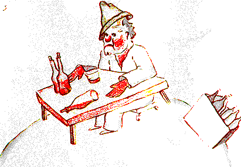

XII
An pláinéad ina dhiaidh sin, meisceoir a bhí ina chónaí ann. Ní
dhearna sé ach cuairt ghearr ann, ach d'fhág sin féin lionn dubh
mór ar an phrionsa beag.
- Cad é atá ar siúl ansin agat? ar seisean leis an mheisceoir, a
fuair sé ina shuí ina thost os comhair moll amháin de bhuidéil
agus moll eile de bhuidéil lána.
- Tá mé ag ól, arsa an meisceoir go duairc dubhach.
- Cén fáth a bhfuil tú ag ól? a d'fhiafraigh an prionsa beag de.
- Le dearmad a dhéanamh, a d'fhreagair an meisceoir.
- Le dearmad a dhéanamh ar cén rud? arsa an prionsa beag, a
raibh trua aige dó cheana féin.
- Le dearmad a dhéanamh ar an náire atá orm, arsa an
meisceoir agus ceannfaoi air.
- Agus cad é an náire atá ort? a d'fhiafraigh an prionsa beag,
mar ba mhaith leis cuidiú a thabhairt dó.
-Náire an ólacháin! arsa an meisceoirsa deireadh, agus tháinig
tost ar fad air.
D'imigh an prionsa beag leis agus ceist air.
Is cinnte go bhfuil daoine fásta saoithiúil amach agus amach,
a bhí sé ag rá leis féin le linn an turais.
